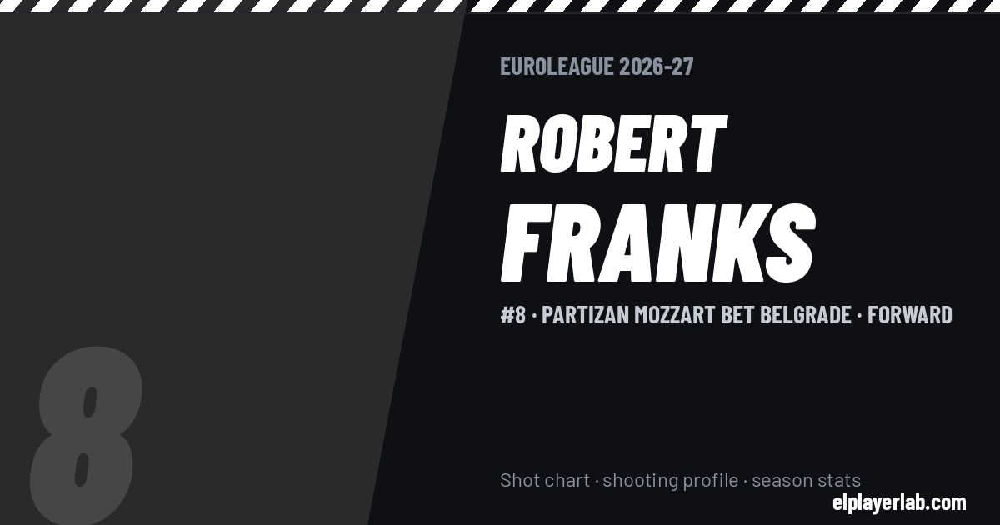

Partizan Mozzart Bet Belgrade · Euroleague 2026-27
Robert Franks
#8 · Forward · Partizan Mozzart Bet Belgrade · 2026-27 · 1 games · 7.0 pts · 5.0 reb · 1.0 ast a game

- Number
- 8
- Position
- Forward
- Height
- 203 cm
- Weight
- 107 kg
- Born
- 1996-12-18
- Country
- United States of America
Career
- Partizan 2026-2027
- Nanjing Monkey Kings 2026
- Ibaraki Robots 2024-2026
- Nagoya Diamond Dolphins 2023-2024
- Hapoel Gilboa Galil 2023
- Adelaide 36ers 2022-2023
- Brisbane Bullets 2021-2022
- Orlando Magic (NBA) 2020-2021
- Lakeland Magic 2021
- Stockton Kings 2020
- Greensboro Swarm 2019-2020
- Washington State (NCAA) 2015-2019
Euroleague Player Lab: shot charts, shooting profiles and season stats for every player, rebuilt after every game.